Tally
Know exactly where your money goes. Tally reads the transaction alerts your bank already emails you and turns them into a live picture: what came in, what went out, where it went, and how much is safe to spend today. No bank login, no spreadsheets, no typing.
Live: tally.godjitech.com · a Godji Tech product. Screens below use sample data.
The problem
Banks in South Africa email an alert for almost every transaction: a card purchase, a debit order, a payment, money in. That's a complete record of your spending, and it sits unread in an inbox. Budgeting apps want your banking password or a screen-scraping integration; the alternative is a spreadsheet you stop updating by the second week.
The goal was a money picture that keeps itself up to date from data you already have, built around how people actually get paid: payday to payday, not the 1st to the 31st. It had to answer the one question people open a money app for (can I afford this?) and it had to run on its own, for anyone, without asking for a bank login.
What I built
Alerts in, transactions out
Sign in with Google, pick the sender your bank's alerts come from, and Tally imports months of history in one go. A parser pulls the amount, merchant, card, account and available balance out of each alert, and keeps checking every few minutes while the app is open.
Safe to spend today
One number on the home screen: the real balance from your latest alert, minus fixed payments and savings still to come this pay cycle, divided by the days to payday. "How we worked this out" shows every line of the sum.
Pay cycles, not months
Tally finds your salary and counts from payday to payday everywhere: totals, charts, budgets and history. A payday plan ticks itself off as rent, savings and other fixed payments go out.
Categories that learn
Teach it a merchant once and every past and future transaction follows. A review queue holds anything new, with "just this one", "always" or "ask me each time", plus split payments, pass-through money and savings categories that don't count as spending.
Money Tally didn't see
Every alert carries a balance. Tally reconciles consecutive balances against everything in between and surfaces what moved with no email: bank fees, debit orders, or money moved between your own accounts, which it matches and offers to file as a transfer.
While you're not looking
Optional server-side import every 15 minutes, a Sunday-evening email summary and a heads-up on large payments, sent from the product's own domain. Offline mode, undo on every bulk change, global search and Excel export.
Screens
Getting in
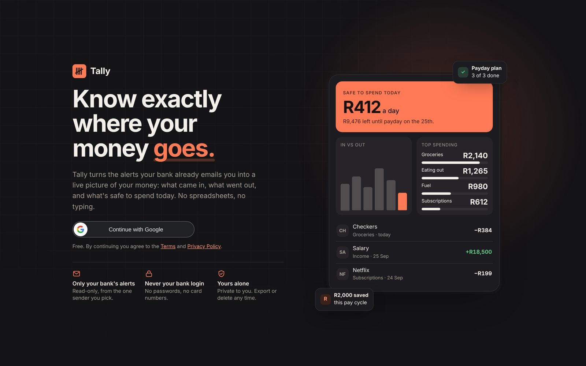
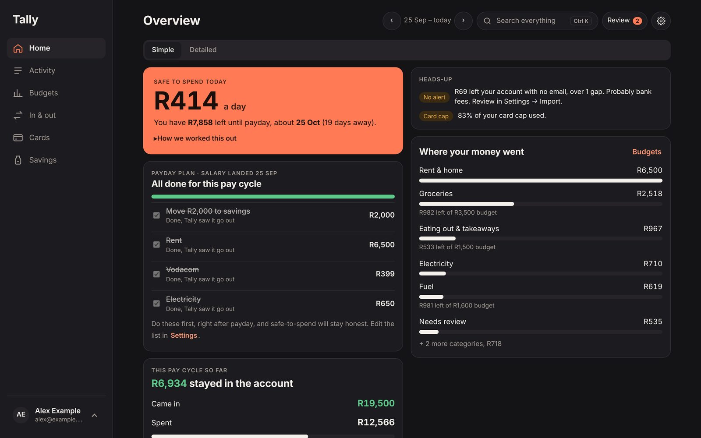
Day to day
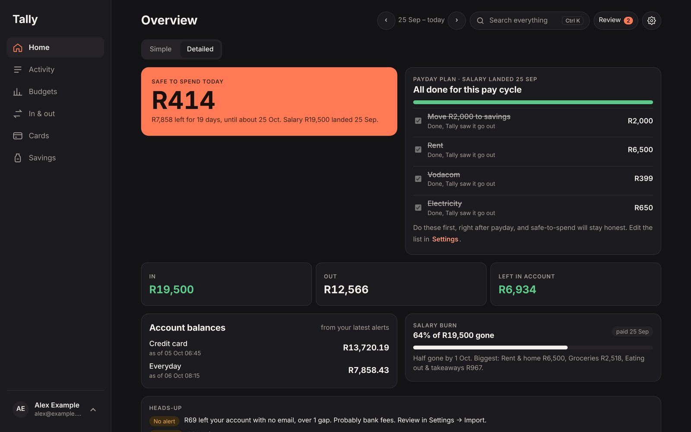
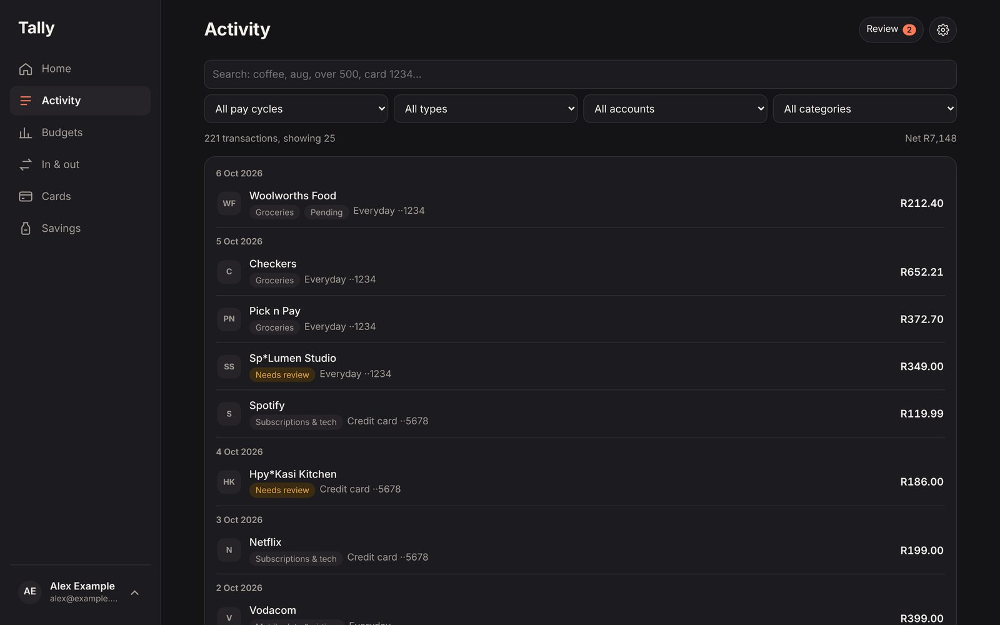
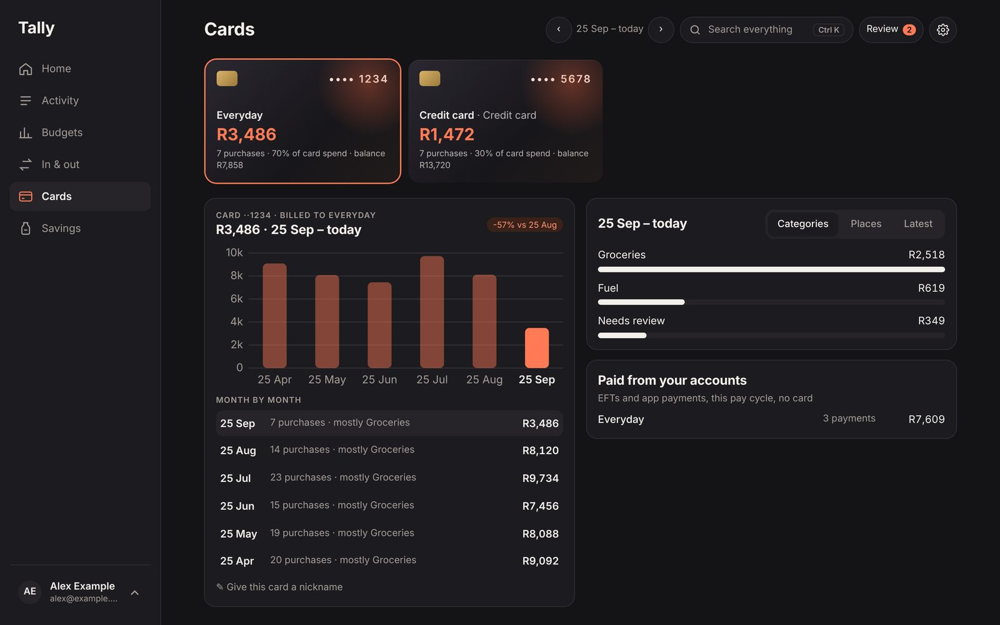
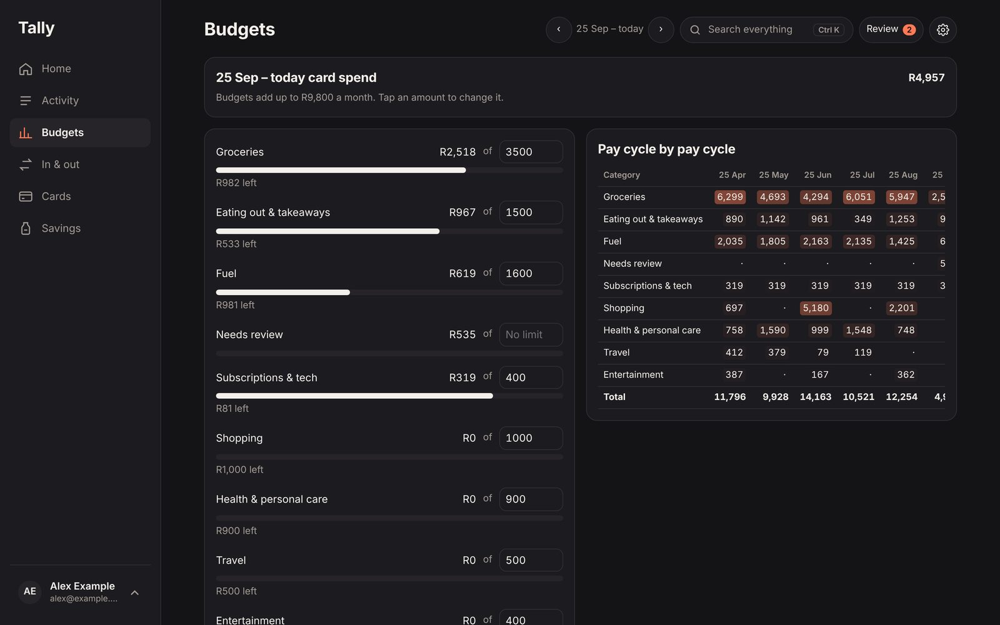
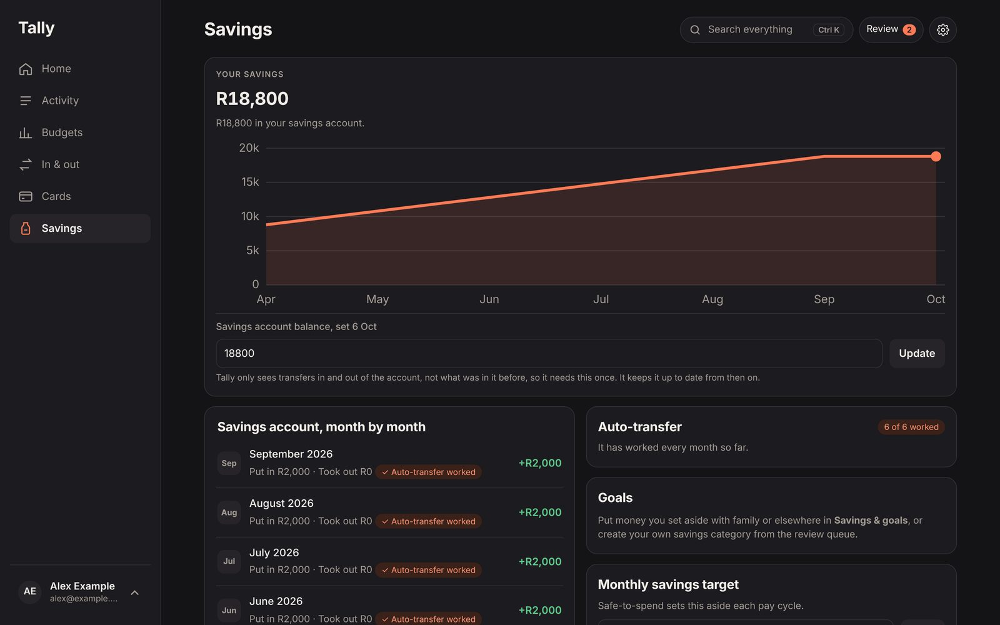
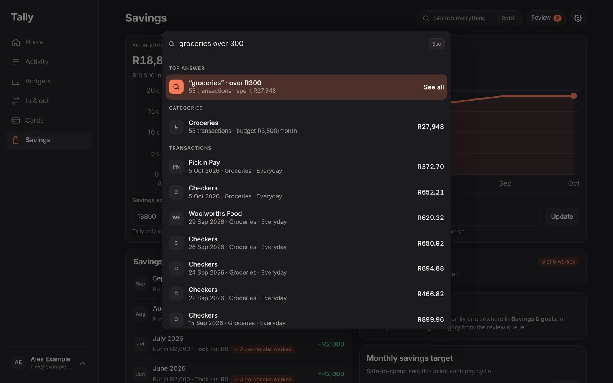
The reconciliation
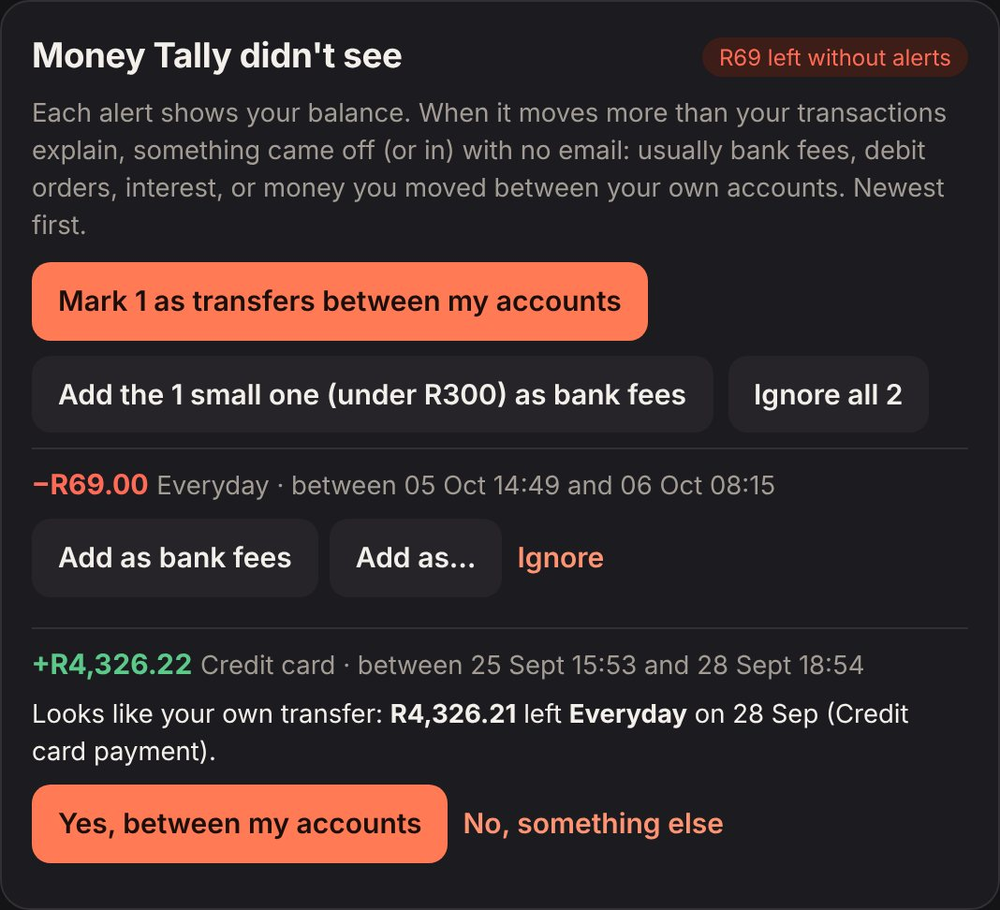
On the phone
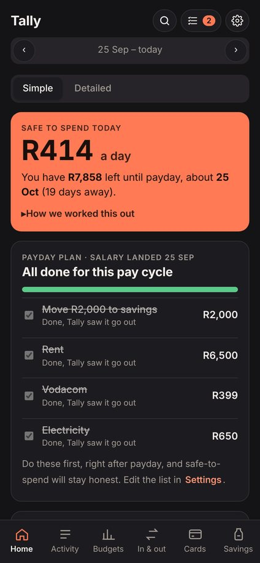
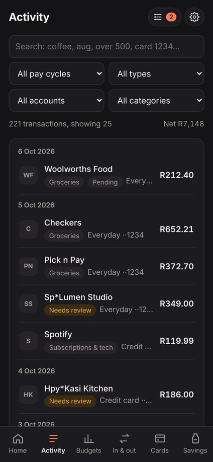
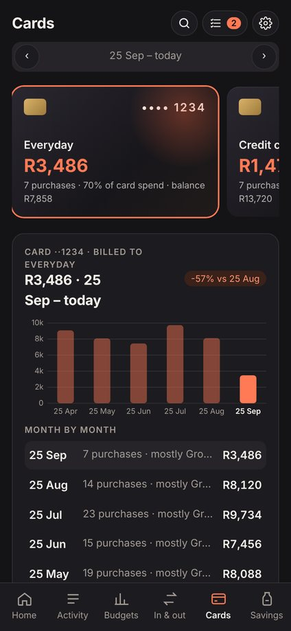
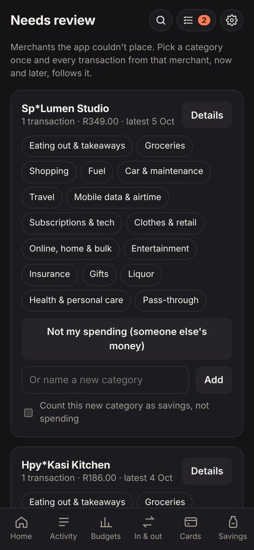
Architecture
Static web app tally.godjitech.com on Netlify · no build step
├── index.html UI, state, pay-cycle engine, reconciliation, search
├── parser.js alert parser, shared with the server, unit-tested
├── Google Identity sign-in on Tally's own domain (ID token → Supabase)
├── Gmail API read-only, queried by the one sender the user picks
└── sw.js offline shell + cached data, installable PWA
Supabase Postgres · auth · row-level security
├── profiles · txns one row per user / transaction, RLS on every table
├── gmail_tokens refresh tokens, no client policies at all
└── notify email preferences
Edge Functions (Deno) scheduled by pg_cron, key held in Vault
├── gmail-connect one-time code → refresh token, kept server-side
├── import-alerts every 15 min: new alerts for every connected user
└── weekly-summary Sunday email + large-payment alerts over SMTP
No bank integration, on purpose. Bank-feed APIs mean handing over a banking login or paying an aggregator, and neither works for a small product in South Africa. Bank alert emails are already complete, timestamped and include the available balance, so Tally reads those instead, with the narrowest Gmail access available, filtered to one sender, and stores only the extracted fields, never the email body.
The harder parts
A number people can trust
"Safe to spend" is only useful if it's right, and adding up transactions drifts: a missed alert, a pending card hold or a transfer to savings and the figure is off. So when an alert carries a balance, Tally starts from the bank's own number and only adjusts for what has happened since. The maths sits under a "How we worked this out" toggle, so nobody has to take it on faith.
Reconciling balances, not just transactions
The first version compared each alert's balance only with the alert before it, and flagged hundreds of false gaps, including the salary. The rewrite walks each account in time order and sums everything in between: history rows, transfers, reversed purchases (out at purchase, back at reversal), duplicate records counted once, and date-only items allowed to sit on either side of a same-day alert. What's left is real, and money moved between your own accounts is matched to the payment that funded it.
Spending versus moving money
Money sent to savings, held for someone else, or used to pay off your own credit card leaves the account, but it isn't spending. Tally keeps those apart: savings and pass-through categories, own-account transfers and split payments, so "out" stacks into spent and saved and the charts agree with the totals.
Running without anyone watching
The app works fully in the browser, but alerts arrive when it's closed. A Postgres cron job calls edge functions with a key held in Vault; refresh tokens live in a table with no client policies, so only the server can read them. If a user revokes access, the next run sees it and turns the feature off for them.